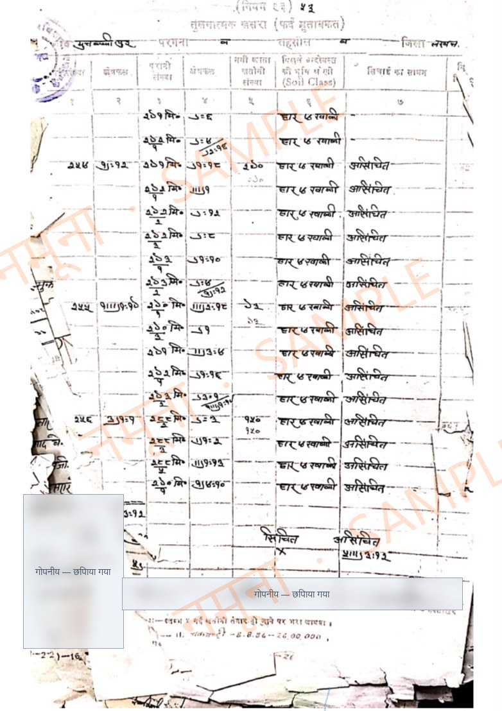
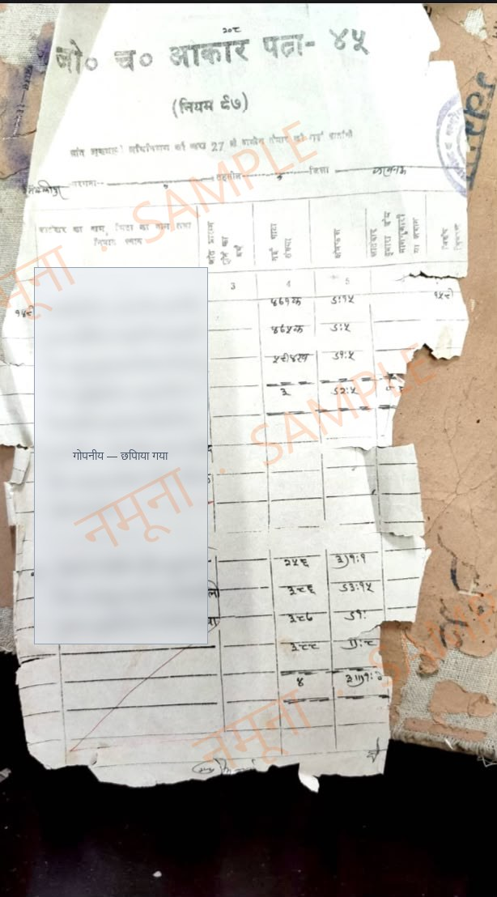
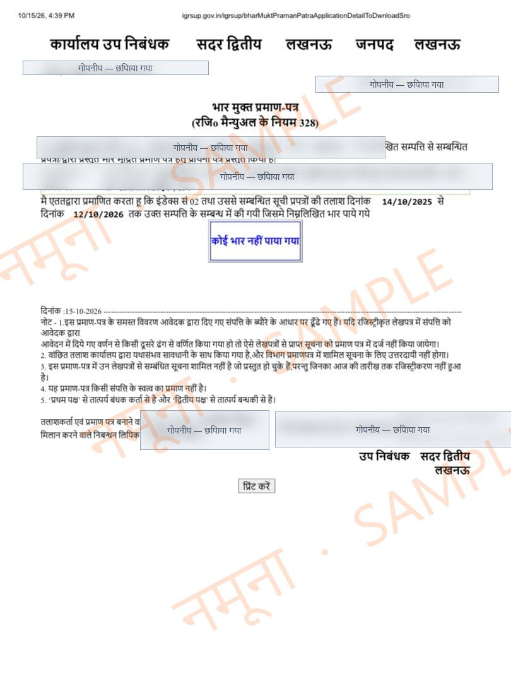
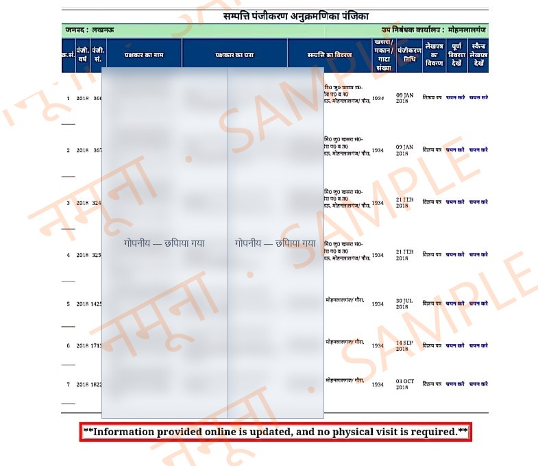

DSD PropertiesLUCKNOW · BUY SAFELY
नमूना रिपोर्ट · Sample Report
प्रॉपर्टी वेरिफिकेशन रिपोर्ट
प्लॉट या मकान खरीदने से पहले हम आपकी तरफ़ से कौन-से कागज़ जांचते हैं, और रिपोर्ट में आपको क्या मिलता है। अंदर असली कागज़ों के नमूने हैं। उनमें से नाम और निजी जानकारी हटा दी गई है।
₹5,000आवासीय प्लॉट / फ्लैट
48 घंटेमें PDF रिपोर्ट
6 जांचेंसरकारी रिकॉर्ड से
इस रिपोर्ट में हम ये 6 चीज़ें जांचते हैं
1खसरे का पुराना-नया रिकॉर्ड (आकार पत्र-41)
2किसके नाम है ज़मीन (आकार पत्र-45)
3लोन/गिरवी और Registry की कड़ी
4कोई कोर्ट केस तो नहीं
5मौका मुआयना (कागज़ों से)
6LDA की मंज़ूरी
dsdproperties.inWhatsApp 85950 02933
नमूना · SAMPLE
DSD Propertiesरिपोर्ट का पहला पन्ना
रिपोर्ट एक नज़र में
रिपोर्ट का पहला पन्ना कुछ ऐसा दिखता है। एक नज़र में पता चल जाता है कि कौन-सा कागज़ ठीक है, किस बात पर विक्रेता से पूछना है, और कहाँ रुककर सोचना है। हर बात का पूरा ब्योरा आगे के पन्नों में होता है।
1. खसरा रिकॉर्डआकार पत्र-41
✓ ठीक हैपुराना और नया गाटा नंबर आपस में मिलते हैं। रकबा (क्षेत्रफल) भी उतना ही है जितना बताया गया।
2. मालिक का नामआकार पत्र-45
⚠ पहले पूछेंइस गाटा में 3 हिस्सेदार दर्ज हैं। Registry में तीनों के दस्तख़त होने चाहिए।
3. भार मुक्त + RegistrySub-Registrar ऑफ़िस
✓ ठीक हैजांची गई अवधि में कोई लोन या गिरवी दर्ज नहीं मिली। पिछली Registry एक क्रम में हैं।
4. कोर्ट केसतहसील, सिविल, चकबंदी कोर्ट
✓ ठीक हैइस गाटा पर कोई केस या stay order नहीं मिला।
5. मौका मुआयनानक्शा और राजस्व रिकॉर्ड
⚠ पहले पूछेंनक्शे में गाटा के उत्तर में नाला दर्ज है। प्लॉट तक का रास्ता रिकॉर्ड में साफ़ नहीं है, विक्रेता से पूछें।
6. LDA मंज़ूरीLDA, Master Plan 2031
⚠ पहले पूछेंकॉलोनी के layout की LDA मंज़ूरी का रिकॉर्ड नहीं मिला। बिल्डर से approval की कॉपी मांगें, फिर आगे बढ़ें।
✓ ठीक है⚠ पहले पूछें✗ अभी रुकें
ये नतीजे सिर्फ़ उदाहरण हैं, ताकि आप देख सकें कि रिपोर्ट कैसी दिखती है। आपकी रिपोर्ट में आपकी प्रॉपर्टी के असली नतीजे होंगे।
रिपोर्ट के आख़िर में आपको मिलता है
- हमारी राय: सौदा ठीक है, कुछ शर्तों के साथ ठीक है, या अभी रुकें, और इसकी वजह।
- अगले कदम: Registry से पहले विक्रेता से कौन-से कागज़ लें और Agreement में क्या लिखवाएं।
DSD Properties · dsdproperties.inपृष्ठ 2
नमूना · SAMPLE
DSD Propertiesजांच 1 / 6
1
चकबंदी का रिकॉर्ड
तुलनात्मक खसरा (आकार पत्र-41)
गाँव में जब चकबंदी हुई, तब ज़मीन के पुराने गाटा नंबर बदलकर नए नंबर दिए गए। यह कागज़ दोनों को साथ-साथ दिखाता है: पुराना नंबर, नया नंबर, रकबा, और ज़मीन किस तरह की है (खेती, बंजर, तालाब वगैरह)। इससे पता चलता है कि जो गाटा नंबर आपको बताया गया है, वह असल में कहाँ से आया है।
हम क्या देखते हैं
- बताया गया गाटा नंबर रिकॉर्ड में है या नहीं
- पुराने और नए नंबर का मिलान, और रकबे में फ़र्क
- ज़मीन की किस्म: कहीं तालाब, चारागाह या सरकारी ज़मीन तो नहीं
- गाटा के हिस्से (जैसे 253/1, 253/2) सही लिखे हैं या नहीं
कब सावधान रहें
- विक्रेता के कागज़ में रकबा ज़्यादा और रिकॉर्ड में कम हो
- गाटा नंबर बदला हुआ लगे। लखनऊ में खसरा बदलकर तालाब की ज़मीन बेचने के मामले आ चुके हैं।
- गाटा नंबर चकबंदी रिकॉर्ड में मिले ही नहीं

नमूना: तुलनात्मक खसरा। बाईं ओर पुराने गाटा नंबर, बीच में नए नंबर, दाईं ओर ज़मीन की किस्म। निजी जानकारी छिपाई गई है।
DSD Properties · dsdproperties.inपृष्ठ 3
नमूना · SAMPLE
DSD Propertiesजांच 2 / 6
2
चकबंदी के बाद की खतौनी
ज़मीन किसके नाम है (आकार पत्र-45)
चकबंदी के बाद हर गाटा की नई खतौनी बनी, जिसे आकार पत्र-45 कहते हैं। इसमें लिखा होता है कि ज़मीन किन-किन लोगों के नाम है और किसका कितना हिस्सा है। सीधी बात: ज़मीन बेचने का हक़ उसी को है जिसका नाम यहाँ दर्ज है।
हम क्या देखते हैं
- विक्रेता का नाम दर्ज है या नहीं
- कुल कितने हिस्सेदार हैं, और विक्रेता का हिस्सा कितना है
- नाम और रकबा आज की खतौनी से मिलता है या नहीं
- किसी की मृत्यु के बाद वरासत (वारिसों का नाम चढ़ना) हुई या नहीं
कब सावधान रहें
- कई हिस्सेदारों वाली ज़मीन कोई एक व्यक्ति बेच रहा हो
- विक्रेता का नाम रिकॉर्ड में न हो, सिर्फ़ Power of Attorney हो
- किसी खातेदार की मृत्यु के बाद वरासत दर्ज न हुई हो

नमूना: आकार पत्र-45। बाएं कॉलम में खातेदारों के नाम होते हैं (यहाँ छिपाए गए हैं), दाईं ओर गाटा नंबर और रकबा।
DSD Properties · dsdproperties.inपृष्ठ 4
नमूना · SAMPLE
DSD Propertiesजांच 3 / 6
3
Sub-Registrar ऑफ़िस · IGRSUP
भार मुक्त प्रमाण-पत्र और Registry Index
भार मुक्त प्रमाण-पत्र Sub-Registrar ऑफ़िस से मिलता है। इससे पता चलता है कि तय समय में इस प्रॉपर्टी पर कोई लोन, गिरवी या दूसरी Registry तो नहीं हुई।
साथ में हम Registry Index भी निकालते हैं। इसमें उस खसरे पर हुई हर Registry दिखती है: कब, किसने, किसे बेचा। इसी से Title Chain, यानी मालिकाना हक़ की कड़ी, बनती है।
हम क्या देखते हैं
- जांच की अवधि में कोई लोन या गिरवी दर्ज है या नहीं
- इस प्लॉट की पहले कितनी बार Registry हुई, किसने किसे बेचा
- विक्रेता तक Title Chain पूरी है, या बीच में कोई कड़ी छूटी है
- एक ही प्लॉट की दो अलग लोगों के नाम Registry तो नहीं हुई
कब सावधान रहें
- Registry Index में वही प्लॉट दो अलग खरीदारों के नाम दिखे
- विक्रेता अपने नाम की Registry की कॉपी देने से बचे
- बीच की किसी Registry का रिकॉर्ड न मिले
एक ज़रूरी बात: इस सर्टिफ़िकेट में सिर्फ़ रजिस्टर्ड कागज़ दिखते हैं; बिना Registry वाले सौदे (जैसे सिर्फ़ इकरारनामा) इसमें नहीं आते। सर्टिफ़िकेट पर खुद लिखा होता है कि यह मालिकाना हक़ का सबूत नहीं है। इसलिए हम इसे बाकी जांचों के साथ मिलाकर देखते हैं।
DSD Properties · dsdproperties.inपृष्ठ 5
नमूना · SAMPLE
DSD Propertiesजांच 3 / 6 · नमूना कागज़
भार मुक्त प्रमाण-पत्र और Registry Index के नमूने

भार मुक्त प्रमाण-पत्र: बीच में साफ़ लिखा है "कोई भार नहीं पाया गया"।

Registry Index: एक ही खसरे पर हुई अलग-अलग Registry, तारीख़ के साथ।
DSD Properties · dsdproperties.inपृष्ठ 6
नमूना · SAMPLE
DSD Propertiesजांच 4 / 6
4
वाद-विवाद
ज़मीन पर कोई कोर्ट केस तो नहीं
अगर ज़मीन पर कोई केस चल रहा हो, तो Registry के बाद भी कब्ज़ा या मकान बनाना अटक सकता है। इसलिए हम गाटा नंबर और मालिकों के नाम से तीन जगह देखते हैं:
- तहसील और राजस्व कोर्ट (vaad.up.gov.in): बंटवारे, वरासत और नाम चढ़ाने के केस
- सिविल कोर्ट (eCourts): कब्ज़े, बिक्री या धोखाधड़ी के केस
- चकबंदी कोर्ट: चकबंदी से जुड़े विवाद
साथ ही देखते हैं कि कोई stay order तो नहीं है, या उस इलाके में खरीद-बिक्री पर कोई सरकारी रोक तो नहीं लगी। जैसे कुछ इलाकों में बेचने से पहले DM की मंज़ूरी ज़रूरी होती है।
रिपोर्ट में क्या लिखते हैं
- कौन-सा केस मिला, किस कोर्ट में, और अभी किस स्थिति में है
- केस का सौदे पर क्या असर हो सकता है
- कोई केस नहीं मिला, तो वह भी साफ़ लिखते हैं
कब सावधान रहें
- विक्रेता कहे, "छोटा-सा केस है, कुछ नहीं होगा"
- केस की बात पता होते हुए भी जल्दी Registry का दबाव बनाया जाए
DSD Properties · dsdproperties.inपृष्ठ 7
नमूना · SAMPLE
DSD Propertiesजांच 5 और 6 / 6
5
नक्शा और राजस्व रिकॉर्ड
मौका मुआयना (कागज़ों से)
कागज़ों में ज़मीन की लोकेशन और आसपास की स्थिति भी दर्ज होती है। हम गाँव के नक्शे (शजरा) और राजस्व रिकॉर्ड से देखते हैं कि जो गाटा बेचा जा रहा है, वह कहाँ है और उसके आसपास क्या है।
हम क्या देखते हैं
- नक्शे में गाटा की जगह और उसकी सीमाएं
- गाटा तक पहुंचने का रास्ता दर्ज है या नहीं
- आसपास तालाब, नाला, चकरोड या सरकारी ज़मीन
- रिकॉर्ड में कब्ज़ा किसके नाम दर्ज है
कब सावधान रहें
- बताया गया प्लॉट नक्शे में किसी और गाटा पर पड़ता हो
- प्लॉट तक का रास्ता किसी दूसरे की ज़मीन से होकर जाता हो
6
LDA · Master Plan 2031
LDA की मंज़ूरी
अगर प्लॉट LDA एरिया में है, तो कॉलोनी का layout LDA से पास होना चाहिए। ऐसा न हो, तो आगे मकान का नक्शा पास कराने में दिक्कत आती है, और सीलिंग जैसी कार्रवाई का डर भी रहता है। Master Plan 2031 में हम यह भी देखते हैं कि ज़मीन रहने के लिए है, या ग्रीन बेल्ट, सड़क या किसी और काम के लिए तय है।
हम क्या देखते हैं
- प्लॉट LDA एरिया में है या नहीं
- कॉलोनी के layout और नक्शे की मंज़ूरी
- Master Plan में ज़मीन का उपयोग
- LDA का कोई नोटिस, सीलिंग या कार्रवाई का रिकॉर्ड
कब सावधान रहें
- "LDA एरिया से बाहर है, नक्शे की ज़रूरत नहीं": इसे जांचे बिना न मानें
- ग्रीन बेल्ट या सड़क के लिए तय ज़मीन पर काटे गए प्लॉट
DSD Properties · dsdproperties.inपृष्ठ 8
DSD Propertiesअतिरिक्त सेवाएं
ज़रूरत हो तो ये भी करवा सकते हैं
इनका शुल्क अलग है। आपकी प्रॉपर्टी देखकर WhatsApp पर बता देते हैं।
जिला पंचायत से नक्शे की मंज़ूरीLDA एरिया से बाहर के प्लॉट या मकान के लिए।
30 साल की पूरी Title Chainहर पिछली Registry की कॉपी निकालकर मालिकाना हक़ की पूरी कड़ी।
दाखिल-ख़ारिज (Mutation) की स्थितिपिछली खरीद के बाद नाम चढ़ा या नहीं।
पैमाइश (नाप) और सीमांकनलेखपाल या अमीन से ज़मीन की नाप और सीमा तय कराने में मदद।
फ्लैट के लिए RERA और OC/CCप्रोजेक्ट का RERA नंबर, पूरा होने की तारीख़, और Completion/Occupancy सर्टिफ़िकेट।
LDA / आवास विकास का आवंटन पत्रआवंटन असली है या नहीं, कोई बकाया तो नहीं, फ्री-होल्ड हुआ या नहीं।
Agreement और बैनामे के ड्राफ़्ट की जांचRegistry से पहले शर्तें, रकबा और चौहद्दी ठीक हैं या नहीं।
Power of Attorney की जांचPoA असली और रजिस्टर्ड है या नहीं, और उसमें बेचने का हक़ है या नहीं।
सर्किल रेट, स्टांप ड्यूटी और सही कीमतकुल ख़र्च का हिसाब और बाज़ार कीमत का अंदाज़ा।
NRI और बाहर रहने वालों के लिएबिना लखनऊ आए पूरी कागज़ी जांच और PDF रिपोर्ट।
DSD Properties · dsdproperties.inपृष्ठ 9
DSD Propertiesकैसे शुरू करें
जांच कैसे होती है
1कागज़ भेजेंखतौनी, बैनामा या प्लॉट की जानकारी WhatsApp पर
2फ़ीस₹5,000 (आवासीय प्लॉट या फ्लैट)
3जांचसरकारी रिकॉर्ड, नक्शे और कोर्ट केस की जांच
4रिपोर्ट48 घंटे में PDF, हमारी राय के साथ
क्यों कराएं जांच?
प्रॉपर्टी ज़िंदगी की सबसे बड़ी खरीद होती है। ₹5,000 की जांच से आप लाखों के नुकसान, सालों की कोर्ट-कचहरी और बाद की परेशानी से बच सकते हैं। पैसा देने से पहले कागज़ों की सच्चाई जान लेना ही सबसे सस्ता बचाव है।
पैसा देने से पहले एक बार जांच करा लें
dsdproperties.in/services/property-verification-lucknow
WhatsApp: 85950 02933
नोट: यह एक नमूना रिपोर्ट है। कागज़ों से लोगों के नाम, पते, नंबर और दस्तख़त छिपा दिए गए हैं, और पहले पन्ने के नतीजे सिर्फ़ उदाहरण हैं। हमारी रिपोर्ट सरकारी रिकॉर्ड पर आधारित एक स्वतंत्र कागज़ी जांच है। यह कोर्ट का फ़ैसला या मालिकाना हक़ की गारंटी नहीं है, इसलिए बड़े सौदे में वकील की सलाह भी ज़रूर लें, और खरीदने से पहले एक बार प्लॉट खुद जाकर ज़रूर देखें। DSD Properties किसी सरकारी विभाग से जुड़ी नहीं है।
DSD Properties · dsdproperties.inपृष्ठ 10